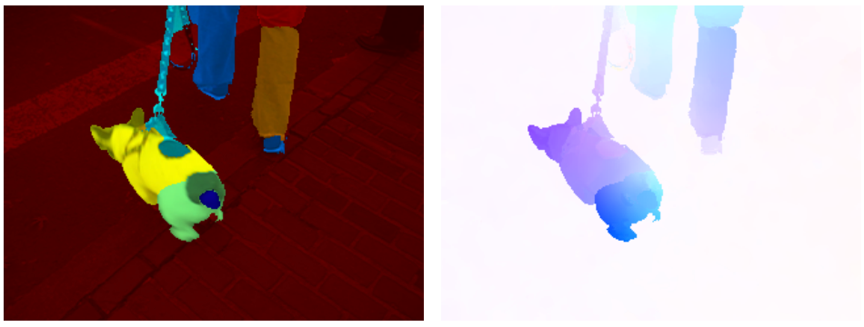

|
Deqing Sun
Google Inc. Email: deqingsunxkxkxk@google.com |
Area Chairs for ECCV 2022, CVPR 2022, CVPR 2020, BMVC 2020, CVPR 2019, BMVC 2019, ECCV 2018
Co-organized Workshop on What is Motion for? at ECCV 2022
Co-organized Workshop/Tutorial on AI for Content Creation at CVPR 2019-2022 and SIGGRAPH 2018
Co-organized Workshop on What is Optical Flow for? at ECCV 2018
Guest editor for special issue on Deep Learning for Image Restoration in Computer Vision and Image Understanding
Reviewer for National Science Foundation (NSF)
Publications Google scholar profile
| Deqing Sun, Charles Herrmann, Fitsum Reda, Michael Rubinstein, David Fleet, William T Freeman What Makes RAFT Better Than PWC-Net? arXiv 2022. [pdf] [code] | |

|
Fitsum Reda, Janne Kontkanen, Eric Tabellion, Deqing Sun, Caroline Pantofaru, Brian Curless FILM: Frame Interpolation for Large Motion. arXiv 2022. [pdf] [code] |
| Charles Herrmann*, Kyle Sargent*, Lu Jiang, Ramin Zabih, Huiwen Chang, Ce Liu, Dilip Krishnan, Deqing Sun (*equal contribution) Pyramid Adversarial Training Improves ViT Performance. IEEE/CVF Conference on Computer Vision and Pattern Recognition (CVPR) 2022. Oral presentation. [pdf] [code] | |
| Klaus Greff, Francois Belletti, Lucas Beyer, Carl Doersch, Yilun Du, Daniel Duckworth, David J Fleet, Dan Gnanapragasam, Florian Golemo, Charles Herrmann, Thomas Kipf, Abhijit Kundu, Dmitry Lagun, Issam Laradji, Hsueh-Ti (Derek) Liu, Henning Meyer, Yishu Miao, Derek Nowrouzezahrai, Cengiz Oztireli, Etienne Pot, Noha Radwan, Daniel Rebain, Sara Sabour, Mehdi S. M. Sajjadi, Matan Sela, Vincent Sitzmann, Austin Stone, Deqing Sun, Suhani Vora, Ziyu Wang, Tianhao Wu, Kwang Moo Yi, Fangcheng Zhong, Andrea Tagliasacchi Kubric: A scalable dataset generator . IEEE/CVF Conference on Computer Vision and Pattern Recognition (CVPR) 2022. [pdf] [code] | |
| Jinshan Pan, Deqing Sun, Jiawei Zhang, Jinhui Tang, Jian Yang, Yu-Wing Tai, Ming-Hsuan Yang Dual Convolutional Neural Networks for Low-Level Vision. International Journal of Computer Vision (IJCV), 2022. [pdf] [code] | |

|
Wei-Sheng Lai, YiChang Shih, Lun-Cheng Chu, Xiaotong Wu, Sung-fang Tsai, Michael Krainin, Deqing Sun, Chia-Kai Liang Face Deblurring using Dual Camera Fusion on Mobile Phones . ACM Transactions on Graphics (Proceedings of SIGGRAPH 2022). [Pixel 6 Launch] |
| H. Song, D. Sun, S. Chun, V. Jampani, D. Han, B. Heo, W. Kim, and M-H Yang . ViDT: An Efficient and Effective Fully Transformer-based Object Detector. International Conference on Learning Representations (ICLR) 2022. [pdf] [code] | |

|
G. Yang, D. Sun, V. Jampani, D. Vlasic, F. Cole, C. Liu and D. Ramanan. ViSER: Video-Specific Surface Embeddings for Articulated 3D Shape Reconstruction. Neural Information Processing Systems (NeurIPS) 2021. Spotlight presentation. [pdf] [webpage] [code] |
| D. Sun, D. Vlasic, C. Herrmann, V. Jampani, M. Krainin, H. Chang, R. Zabih, W.T. Freeman and C. Liu. AutoFlow: Learning a Better Training Set for Optical Flow. IEEE/CVF Conference on Computer Vision and Pattern Recognition (CVPR) 2021. Oral presentation. [pdf] [webpage] [data] | |
| G. Yang, D. Sun, V. Jampani, D. Vlasic, F. Cole, H. Chang, D. Ramanan, W.T. Freeman and C. Liu. LASR: Learning Articulated Shape Reconstruction from a Monocular Video. IEEE/CVF Conference on Computer Vision and Pattern Recognition (CVPR) 2021. [pdf] [webpage] [code] | |

|
F. Tan, D. Tang, M. Dou, K. Guo, R. Pandey, C. Keskin, R. Du, D. Sun, S. Bouaziz, S. Fanello, P. Tan and Y. Zhang. HumanGPS: Geodesic PreServing Feature for Dense Human Correspondences. IEEE/CVF Conference on Computer Vision and Pattern Recognition (CVPR) 2021. [pdf] [webpage] [code] |
| G. Li, V. Jampani, L. Sevilla-Lara, D.Sun, J. Kim and J. Kim. Adaptive Prototype Learning and Allocation for Few-Shot Segmentation . IEEE/CVF Conference on Computer Vision and Pattern Recognition (CVPR) 2021. [pdf] [webpage] [code] | |
| T. Xiao, J. Yuan, D. Sun, Q. Wang, X. Zhang, K. Xu and M-H. Yang. Learnable Cost Volume Using the Cayley Representation . European Conference on Computer Vision (ECCV) 2020. [pdf] [code] | |
| D. Sun, X. Yang, M-Y. Liu and J. Kautz. Models Matter, So Does Training: An Empirical Study of CNNs for Optical Flow Estimation . IEEE Transactions on Pattern Analysis and Machine Intelligence (TPAMI), pp. 1408-1423, Vol. 42, Issue 6, 2020 [pdf] [code] | |
| H. Jiang, D. Sun, V. Jampani, Z. Lv, E. Learned-Miller and J. Kautz. SENSE: A Shared Encoder Network for Scene Flow Estimation. IEEE/CVF Conference on Computer Vision (ICCV) 2019. Oral presentation. [pdf] [code] | |
| F Reda, D Sun, A Dundar, M Shoeybi, G Liu, K. Shih, A. Tao, J. Kautz and B. Catanzaro. Unsupervised Video Interpolation Using Cycle Consistency. IEEE/CVF Conference on Computer Vision (ICCV) 2019. [pdf] [code] | |
| W-S. Lai, O. Gallo, J. Gu, D. Sun, M-H. Yang, and J. Kautz. Video Stitching for Linear Camera Arrays. British Machine Vision Conference (BMVC) 2019. [pdf] | |
| A. Ranjan, V. Jampani, L. Balles, K. Kim, D. Sun, J. Wulff and M. J. Black. Competitive Collaboration: Joint Unsupervised Learning of Depth, Camera Motion, Optical Flow and Motion Segmentation. IEEE/CVF Conference on Computer Vision and Pattern Recognition (CVPR) 2019. [pdf] [code] | |

|
H. Su, V. Jampani, D. Sun, O. Gallo, E. Learned-Miller and J. Kautz. Pixel-Adaptive Convolutional Neural Networks. IEEE/CVF Conference on Computer Vision and Pattern Recognition (CVPR) 2019. [pdf] [webpage] [code] |
| Z. Ren, O. Gallo, D. Sun, M-H Yang, E. B. Sudderth and J. Kautz. A Fusion Approach for Multi-Frame Optical Flow Estimation. IEEE Winter Conference on Applications of Computer Vision (WACV) 2019. [pdf] [code] | |

|
V. Jampani, D. Sun, M-Y. Liu, M-H. Yang and J. Kautz. Superpixel Sampling Networks. European Conference on Computer Vision (ECCV) 2018. [pdf] [webpage] [code] |
| X. Xu, D. Sun, S. Liu, W. Ren, Y. Zhang, M-H. Yang and J. Sun. Rendering Portraitures from Monocular Camera and Beyond . European Conference on Computer Vision (ECCV) 2018. [pdf] | |
| J. Dong, J. Pan, D. Sun, Z. Su and MH Yang. Learning Data Terms for Non-blind Deblurring . European Conference on Computer Vision (ECCV) 2018. [pdf] | |
| Z. Lv, K. Kim, A. Troccoli, A. Sun, J. M. Rehg and Jan Kautz. Learning Rigidity in Dynamic Scenes with a Moving Camera for 3D Motion Field Estimation. European Conference on Computer Vision (ECCV) 2018. [pdf] [code ] [data ] | |
| D. Sun, X. Yang, M-Y. Liu and J. Kautz. PWC-Net: CNNs for Optical Flow Using Pyramid, Warping, and Cost Volume. IEEE/CVF Conference on Computer Vision and Pattern Recognition (CVPR) 2018. Oral presentation. Winner of optical flow competition. NVAIL Pioneering Research Award. [pdf] [CVPR talk] [code] | |

|
H. Jiang, D. Sun, V. Jampani, M-H. Yang, E. Learned-Miller and J. Kautz. Super SloMo: High Quality Estimation of Multiple Intermediate Frames for Video Interpolation. IEEE/CVF Conference on Computer Vision and Pattern Recognition (CVPR) 2018. Spotlight presentation. Incorporated into NVIDIA NGX SDK for the Turing GPU. [pdf] [CVPR talk] [video results] [news] [code] |

|
H. Su, V. Jampani, D. Sun, S. Maji, E. Kalogerakis, M-H. Yang and J. Kautz. SPLATNet: Sparse Lattice Networks for Point Cloud Processing. IEEE/CVF Conference on Computer Vision and Pattern Recognition (CVPR) 2018. Oral presentation. Best Paper Honorable Mention. NVAIL Pioneering Research Award. [pdf] [CVPR talk] [code] |
| J. Pan, S. Liu, D. Sun, J. Zhang, Y. Liu, J. Ren, Z. Li, J. Tang, H. Lu, Y-W Tai and M-H Yang. Learning Dual Convolutional Neural Networks for Low-Level Vision. IEEE/CVF Conference on Computer Vision and Pattern Recognition (CVPR) 2018. [pdf] [webpage] [code] | |
| Y-H. Tsai, M-Y. Liu, D. Sun, M-H. Yang, and J. Kautz. Learning Superpixels with Segmentation-Aware Affinity Loss . IEEE/CVF Conference on Computer Vision and Pattern Recognition (CVPR) 2018. [pdf] [webpage] [code] | |
| W-C. Tu, M-Y. Liu, V. Jampani, D. Sun, S-Y. Chien, M-H. Yang and J. Kautz. Learning Binary Residual Representations for Domain-specific Video Streaming . AAAI conference on artificial intelligence (AAAI) 2018. [pdf] | |
| Z. Ren, D. Sun, J. Kautz, E. B. Sudderth. Cascaded Scene Flow Prediction using Semantic Segmentation. IEEE International Conference on 3D Vision (3DV) 2017. [pdf] | |
| J. Pan, D. Sun, H. Pfister and M-H. Yang. Deblurring images via dark channel prior. IEEE Transactions on Pattern Analysis and Machine Intelligence (TPAMI), pp. 2315-2328, Vol. 40, Issue 10, 2017 [pdf] [code] | |
| X. Xu, D. Sun, J. Pan, Y. Zhang, H. Pfister and M-H. Yang. Learning to Super-Resolve Blurry Face and Text Images. IEEE/CVF Conference on Computer Vision (ICCV) 2017. [pdf] [code] | |
| N. Bonneel, J. Tompkin, D. Sun, O. Wang, K. Sunkavalli, S. Paris and H. Pfister. Consistent Video Filtering for Camera Arrays. Computer Graphics Forum (Proceedings of Eurographics 2017). [pdf] [code] | |

|
J. Pan, D. Sun, H. Pfister and M-H. Yang. Blind Image Deblurring Using Dark Channel Prior. IEEE/CVF Conference on Computer Vision and Pattern Recognition (CVPR) 2016. Oral presentation. [pdf] [code] |
| L. Sevilla, D. Sun, V. Jampani and M. J. Black. Optical Flow with Semantic Segmentation and Localized Layers. IEEE/CVF Conference on Computer Vision and Pattern Recognition (CVPR) 2016. Spotlight presentation. [pdf] [webpage] [video] [code] | |
| N. Bonneel, J. Tompkin, K. Sunkavalli, D. Sun, S. Paris and H. Pfister. Blind Video Temporal Consistency. ACM Transactions on Graphics (Proceedings of SIGGRAPH Asia 2015). [pdf] [code] [code] | |
| D. Sun, E. B. Sudderth and H. Pfister. Layered RGBD Scene Flow Estimation. IEEE Conference on Computer Vision and Pattern Recognition (CVPR), 2015. [pdf] | |

|
D. Sun, S. Roth and M. J. Black. A Quantitative Analysis of Current Practices in Optical Flow Estimation and the Principles Behind Them. International Journal of Computer Vision (IJCV), 106(2):115-137, 2014. Journal version of the Longuet-Higgins Prize paper on "Secrets of Optical Flow". [pdf] [code] |

|
N. Bonneel, K. Sunkavalli, J. Tompkin, D. Sun, S. Paris and H. Pfister. Interactive Intrinsic Video Editing . ACM Transactions on Graphics (Proceedings of SIGGRAPH Asia 2014). [pdf] [code] [data] |
| L. Sevilla-Lara, D. Sun, E. Learned-Miller and MJ Black. Optical Flow Estimation with Channel Constancy . European Conference on Computer Vision (ECCV) 2014. [pdf] | |
| D. Sun, C. Liu and H. Pfister. Local Layering for Joint Motion Estimation and Occlusion Detection. IEEE Conference on Computer Vision and Pattern Recognition (CVPR), 2014. Oral presentation. [pdf] | |
| D. Sun, J. Wulff, E. B. Sudderth, H. Pfister and M. J. Black. A Fully-Connected Layered Model of Foreground and Background Flow. IEEE Conference on Computer Vision and Pattern Recognition (CVPR), 2013. [pdf] [code] | |
| C. Liu and D. Sun. On Bayesian Adaptive Video Super Resolution. IEEE Transactions on Pattern Analysis and Machine Intelligence (TPAMI), pp. 346-360, Vol. 36, Issue 2, 2014. [pdf] | |
|
|
D. Sun. From Pixels to Layers: Joint Motion Estimation and Segmentation. Doctoral Thesis. Brown University. May, 2013. [pdf] |
|
D. Sun and C. Liu. Non-causal Temporal Prior for Video Deblocking. European Conference on Computer Vision (ECCV), 2012. [pdf] |
|
|  | D. Sun, E. B. Sudderth and M. J. Black. Layered Segmentation and Optical Flow Estimation Over Time. IEEE Conference on Computer Vision and Pattern Recognition (CVPR), 2012. [pdf] |
| C. Liu and D. Sun. A Bayesian Approach to Adaptive Video Super Resolution. IEEE Conference on Computer Vision and Pattern Recognition (CVPR) 2011. Oral presentation. [pdf][webpage] | |
| D. Sun, E. B. Sudderth and M. J. Black. Layered Image Motion with Explicit Occlusions, Temporal Consistency, and Depth Ordering. Neural Information Processing Systems (NIPS), 2010. Spotlight presentation. [pdf] | |
| D. Sun, S. Roth and M. J. Black. Secrets of Optical Flow Estimation and Their Principles. Computer Vision and Pattern Recognition (CVPR), 2010. Longuet-Higgins (test-of-time) Prize at CVPR 2020. [pdf] [code] [Secrets of Secrets] | |

|
D. Sun, S. Roth, J.P. Lewis and M. J. Black. Learning Optical Flow. European Conference on Computer Vision (ECCV), 2008. Oral presentation. [pdf] code for [Black and Anandan ] [Horn and Schunck ] |

|
D. Sun and W-K. Cham. Postprocessing of Low Bit Rate Block DCT Coded Images based on a Fields of Experts Prior. IEEE Trans. on Image Processing (TIP), 16(11), pp. 2743- 2751, Nov. 2007. [pdf] [code] |
| D. Sun. Postprocessing of Images Coded Using Block DCT at Low Bit Rates. M.Phil. Thesis. The Chinese University of Hong Kong. July, 2007 . [pdf] | |

|
D. Sun and W-K. Cham. An Effective Postprocessing Method for Lowbit Rate Block DCT Coded Images. IEEE International Conference on Acoustics, Speech and Signal Processing (ICASSP), 2007. [pdf] [code] |
Awards and Honors
-
First place, Optical Flow Competition of Robust Vision Challenge, 2020
-
NVAIL Pioneering Research Award (twice), 2018
-
First place, Optical Flow Competition of Robust Vision Challenge, 2018
-
Outstanding Reviewer: CVPR 2013, ACCV 2014, CVPR 2016, ECCV 2016, CVPR 2018.
-
Second Prize, IEEE Hong Kong Section Postgraduate Student Paper Contest, 2007
I have been fortunate to work with many gifted students:
- Mark Boss ( University of Tübingen), 2021
- Hsin-Ping Huang (UC Merced), 2021
- Kyle Sargent (Google AI Resident), 2021
- Charles Herrmann (Cornell → Google), 2020-2021
- Gen Li (University of Edinburgh), 2020-2021
- Zudi Lin ( Harvard ), 2020-2021
- Hwanjun Song (KAIST → NAVER AI Lab), 2020-2021
- Feitong Tan (SFU), 2020
- Gengshan Yang (CMU), 2020-2021
- Rakesh Jasti (UC Merced), 2019
- Jialiang Wang (Harvard → Facebook), 2019-2020
- Taihong Xiao (UC Merced), 2019
- Xitong Yang (University of Maryland), 2019
- Wei-Sheng Lai (UC Merced → Google), 2018-2019
- Anurag Ranjan (Max Planck Institute for Intelligent Systems → Apple), 2018
- Wei-Chih Tu (National Taiwan University → Ganzin), 2017
- Jiangxin Dong ( DUST → Max Planck Institute for Informatics), 2017-2018
- Huaizu Jiang ( UMass Amherst → Northeastern), 2017-2019
- Zhaoyang Lv (Georgia Tech → Facebook), 2017, 2019
- Hang Su ( UMass Amherst → NVIDIA Research), 2017-2018
- Yi-Hsuan Tsai (UC Merced → NEC Lab → Phiar ), 2017
- Zhile Ren (Brown → Georgia Tech → Apple), 2016-2017
- Xiangyu Xu (Tsinghua/UC Merced → CMU/MIT → NTU), 2016-2017
- Jinshan Pan (DUST/UC Merced → NUST), 2015
© 2021 Deqing Sun. Thanks Dr. Ce Liu for the template.